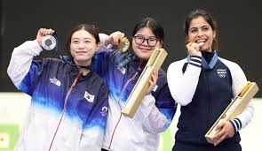
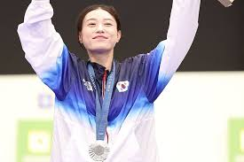

Kim Ye-Ji comenzó su carrera deportiva a la edad de 18 años, participando en competencias locales y destacándose rápidamente por su técnica. Su enfoque y dedicación la llevaron a ganar su primer título importante a los 19 años, lo que le permitió acceder a entrenamientos de élite en centros de alto rendimiento.
Ingreso a un equipo profesional

A los 22 años, Kim fue reclutada por uno de los equipos profesionales más prestigiosos de su disciplina. En este equipo, perfeccionó sus habilidades técnicas y tácticas, participando en su primera competencia internacional a nivel mundial. Fue en este momento cuando su carrera despegó a nivel internacional.
Competiciones Internacionales

Kim ha participado en varias competiciones internacionales, destacándose en campeonatos mundiales y torneos olímpicos. A lo largo de su carrera, ha logrado varias medallas de oro, plata y bronce, consolidándose como una de las principales atletas de su disciplina.